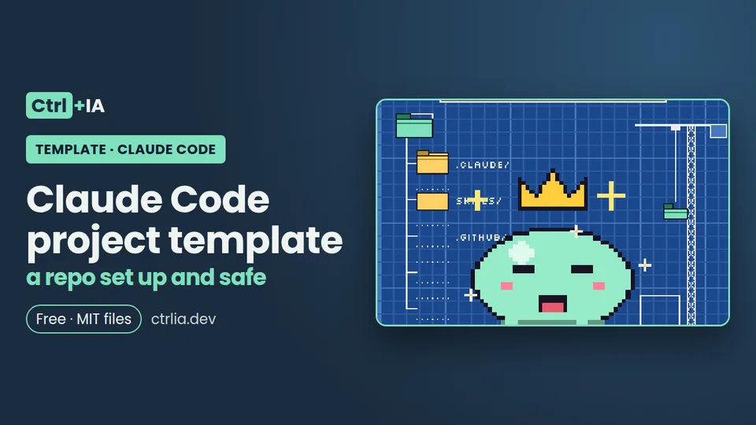

Template · Intermediate · 15 min
Claude Code project template: a repo set up and safe
A Claude Code template repo: short CLAUDE.md, settings.json with allow, ask and deny, safety and test hooks, two skills, a reviewer and CI. Tested.

Tested with Claude Code 2.1.316 · reviewed
See the files on GitHub Free · MIT license
What's included
A template repository to start any project with Claude Code properly set up: a short CLAUDE.md with what Claude can't work out on its own, a .claude/settings.json with allow, ask and deny rules and bypass mode blocked, two hooks (one stops secrets, broad rm -rf and force pushes to main; the other won't let Claude finish with broken tests), two skills, a reviewer subagent, a CI that Claude has to pass and a .worktreeinclude for parallel sessions. Every file is complete and tested on Linux with Claude Code 2.1.316. It also explains what applies before and after you accept folder trust, and what the template does not protect against.
There are 13 files and no external dependencies (Python 3 and git). The English files are in the repository's en/ folder (the root holds the Spanish version):
CLAUDE.md project instructions (short)
.claude/settings.json team permissions and hooks (goes in git)
.claude/hooks/protect.py PreToolUse: secrets, rm -rf, push --force
.claude/hooks/verify.sh Stop: won't finish with broken tests
.claude/skills/run-tests/SKILL.md /run-tests: tests with evidence
.claude/skills/prepare-pr/SKILL.md /prepare-pr: review before the PR
.claude/agents/reviewer.md read-only reviewer subagent
.github/workflows/ci.yml the CI Claude has to pass
.worktreeinclude which ignored files to copy into each worktree
.gitignore .env.example src/app/__init__.py tests/test_app.pyThe rule that organizes everything comes from the official best practices guide: CLAUDE.md is for guidance, and Claude may decide a line doesn't apply; whatever must always hold goes in a hook, a deny rule or a managed setting, because Claude Code enforces those, not the model. That's why "never read .env" shows up three times: as a sentence in CLAUDE.md (so Claude doesn't try), as a deny rule (it blocks the Read tool and the read commands Claude Code recognizes) and in the hook (it also blocks a cp .env ... in Bash). Personal files stay out of git: .claude/settings.local.json, CLAUDE.local.md and .claude/worktrees/ are in the .gitignore.
How to use it
1. Copy the template into your repo
Use the ctrlia-plantilla-claude-code repository as a template on GitHub (the "Use this template" button) or copy the files from its en/ folder into your project. If you used the template, keep only the English version by running this from the root of your new repo (it deletes the Spanish files and the READMEs, keeps .git and LICENSE, and moves everything in en/, dotfiles included, to the root):
find . -mindepth 1 -maxdepth 1 ! -name .git ! -name en ! -name LICENSE -exec rm -rf {} +
(shopt -s dotglob; mv en/* .) && rmdir enThen delete the sample src/ and tests/.
2. Put in your test command
Replace the test command with yours (npm test, pytest, go test ./...) in CLAUDE.md, settings.json, verify.sh, the skills and ci.yml. In Node, the allow rule would be Bash(npm test *) and the Stop hook npm test --silent.
3. Validate the JSON
python3 -m json.tool .claude/settings.jsonclaude doctor shows "Invalid settings" if there's a syntax error.
4. Accept folder trust
Open claude interactively once and accept the trust dialog: that's what turns on your allow rules. Until then, claude -p warns on stderr:
Ignoring 4 permissions.allow entries from .claude/settings.json: this workspace has not been trusted.5. Check that everything loaded
In the session: /hooks (PreToolUse and Stop should be listed), /permissions (each rule and which file it comes from), /skills (run-tests and prepare-pr) and /context (how much space it all takes).
6. Run a stress test
Ask "read the .env" (it should be blocked) and "change add so it subtracts and finish" (the Stop hook should hand the broken test back). You can also test the hooks without opening Claude; this is the real output from Nov 2, 2026:
H=.claude/hooks/protect.py
echo '{"tool_name":"Read","tool_input":{"file_path":"/x/project/.env"}}' | python3 $H; echo "exit $?"
# Blocked by the security hook: '/x/project/.env' contains secrets. Ask the user for the value you need.
# exit 2
echo '{"tool_name":"Read","tool_input":{"file_path":"/x/project/.env.example"}}' | python3 $H; echo "exit $?"
# exit 0
echo '{"tool_name":"Bash","tool_input":{"command":"rm -r -f /"}}' | python3 $H; echo "exit $?"
# Blocked by the security hook: 'rm -rf /' is too broad. Delete specific paths inside the project.
# exit 2
echo '{"tool_name":"Bash","tool_input":{"command":"rm -rf build dist"}}' | python3 $H; echo "exit $?"
# exit 0
echo '{"tool_name":"Bash","tool_input":{"command":"git push --force origin main"}}' | python3 $H; echo "exit $?"
# Blocked by the security hook: 'git push --force' to main is forbidden. Use a branch and a pull request.
# exit 2
# Stop hook with a broken test (add returns a - b):
echo '{"stop_hook_active": false}' | CLAUDE_PROJECT_DIR=$PWD bash .claude/hooks/verify.sh; echo "exit $?"
# The tests fail; fix them before finishing:
# FAIL: test_add_integers (test_app.TestAdd.test_add_integers)
# AssertionError: -1 != 5
# exit 27. Push it and protect main
Push everything except your personal files and turn on branch protection for main on GitHub, requiring the "tests" check and one review to pass.
The files
CLAUDE.md: only what Claude can't see
The official docs suggest a test before writing each line: could Claude find this by reading the code? Would it go looking for it? If both answers are yes, the line isn't needed. Claude finds the folder structure, the test framework and the conventions on its own; what it doesn't find are team decisions, the deployment process or which environment variables are required.
That's why the template's CLAUDE.md has three blocks and fewer than 20 lines: the exact commands (according to the official guide, the most useful line in a CLAUDE.md is the one that runs the tests), how the team works and what isn't in the code. No capitals and no "IMPORTANT": the official guide says current models follow a plainly written line and that emphasis makes them over-apply the rule. If you already have an AGENTS.md for Codex or Cursor, since 2.1.277 Claude Code reads it when there's no CLAUDE.md; if both exist it only loads CLAUDE.md, so you can import it with @AGENTS.md. Adapt it with /init, which suggests improvements instead of overwriting when the file already exists. More in a CLAUDE.md that works.
# Project: sample app (Ctrl+IA template)
## Commands
- Tests: `python3 -m unittest discover -s tests -v`
- A single test: `python3 -m unittest tests.test_app -v`
- There is no build step: it is pure Python, with no external dependencies.
## How we work
- Before calling something done, run the tests and paste the command and its output.
- Small changes: one task, one branch, one pull request.
- Don't add new dependencies without asking first.
- Don't touch `.github/workflows/` or `.claude/` unless asked to.
## What isn't in the code
- Secrets go in `.env` (not in git). Use `.env.example` to see which variables exist; never read or copy `.env`.
- `main` is protected: it is only merged through a pull request with green CI..claude/settings.json: team permissions
Rules are evaluated in the order deny → ask → allow and the first match wins, even if another rule is more specific. The template has:
- allow: the tests (
Bash(python3 -m unittest *)),git add,git commitandgit switch -c. Read-only commands such asls,cat,git statusorgit diffdon't need allowing: Claude Code already runs them without asking. - ask:
git push, installing packages (pip install,uv add) and editing.github/. An ask rule asks even when an allow rule matches, even in auto mode. - deny: reading
.envand.env.*(withRead(!.env.example)so the variables template can be read),secrets/, andcurl,wgetandsudo. - disableBypassPermissionsMode: "disable": prevents starting in bypassPermissions. According to the docs it works from any scope. Remove it if you work inside a disposable container.
Two limits you need to know. One: the allow rules in this file don't apply until you accept the folder's trust dialog; deny and ask rules apply from the start. Two: deny: Bash(curl *) matches the text, so it doesn't stop /usr/bin/curl or sh -c 'curl …'. If you really need to cut off the network, turn on the sandbox (/sandbox; on Linux it needs bubblewrap and socat) with sandbox.network.allowedDomains. The template doesn't turn it on in the project file because, if those dependencies are missing, Claude Code runs commands without the sandbox unless you set sandbox.failIfUnavailable. The full syntax is in the permissions recipe.
{
"$schema": "https://json.schemastore.org/claude-code-settings.json",
"permissions": {
"allow": [
"Bash(python3 -m unittest *)",
"Bash(git add *)",
"Bash(git commit *)",
"Bash(git switch -c *)"
],
"ask": [
"Bash(git push *)",
"Bash(pip install *)",
"Bash(uv add *)",
"Edit(/.github/**)"
],
"deny": [
"Read(./.env)",
"Read(./.env.*)",
"Read(!.env.example)",
"Read(./secrets/**)",
"Bash(curl *)",
"Bash(wget *)",
"Bash(sudo *)"
],
"disableBypassPermissionsMode": "disable"
},
"hooks": {
"PreToolUse": [
{
"matcher": "Bash|Read|Edit|Write",
"hooks": [
{
"type": "command",
"command": "python3 \"$CLAUDE_PROJECT_DIR\"/.claude/hooks/protect.py"
}
]
}
],
"Stop": [
{
"hooks": [
{
"type": "command",
"command": "bash \"$CLAUDE_PROJECT_DIR\"/.claude/hooks/verify.sh"
}
]
}
]
}
}.claude/hooks/protect.py: what can't fail
A PreToolUse hook: it runs before every Bash, Read, Edit and Write. If it exits with code 2, Claude Code cancels the tool and passes the reason to Claude. It blocks: reading or writing .env, .env.local, .pem and .key keys, id_rsa and id_ed25519 (it allows .env.example); Bash commands that name those files; rm -rf (also -r -f, -Rf, --recursive --force and with sudo) on /, ~, $HOME, ., .., * or absolute paths; and git push --force or -f to main or master. If it gets unreadable JSON, it blocks, to fail on the safe side. It's the short version of the safety hooks recipe, which explains each regular expression.
#!/usr/bin/env python3
"""PreToolUse hook: stops secrets, rm -rf outside the project and git push --force to main.
Short version; the full, explained one is in the "security hooks" recipe on ctrlia.dev."""
import json
import re
import sys
SECRET = re.compile(r"(^|/)(\.env(\.[\w-]+)?|[\w.-]+\.pem|[\w.-]+\.key|id_rsa\w*|id_ed25519\w*)$")
TEMPLATE = re.compile(r"(^|/)\.env\.(example|sample|template)$")
SECRET_IN_COMMAND = re.compile(r"(?<![\w.-])(\.env(\.[\w-]+)?|[\w.-]+\.pem|id_rsa\w*|id_ed25519\w*)(?![\w.-])")
def block(reason):
print(f"Blocked by the security hook: {reason}", file=sys.stderr)
sys.exit(2) # 2 = Claude Code cancels the tool and passes the reason to Claude
def main():
try:
data = json.load(sys.stdin)
except ValueError:
block("unreadable JSON input; for safety nothing is run")
tool = data.get("tool_name", "")
tool_input = data.get("tool_input", {}) or {}
if tool in ("Read", "Edit", "Write"):
path = tool_input.get("file_path", "")
if SECRET.search(path) and not TEMPLATE.search(path):
block(f"'{path}' contains secrets. Ask the user for the value you need.")
elif tool == "Bash":
command = tool_input.get("command", "")
for m in SECRET_IN_COMMAND.finditer(command):
if not re.fullmatch(r"\.env\.(example|sample|template)", m.group(1)):
block(f"the command touches '{m.group(1)}', which contains secrets.")
for part in re.split(r"&&|\|\||;|\||\n", command):
p = part.split()
if p[:1] == ["sudo"]:
p = p[1:]
flags = "".join(o.lstrip("-") for o in p[1:] if o.startswith("-") and not o.startswith("--"))
recursive = "r" in flags.lower() or "--recursive" in p
forced = "f" in flags or "--force" in p
if p[:1] == ["rm"] and recursive and forced:
for target in (x.strip("'\"") for x in p[1:] if not x.startswith("-")):
if target in (".", "./", "..", "*", "./*") or target.startswith(("/", "~", "$HOME", "..")):
block(f"'rm -rf {target}' is too broad. Delete specific paths inside the project.")
if re.search(r"\bgit\b.*\bpush\b", part) and re.search(r"\s(--force\S*|-[a-zA-Z]*f)\b", part) \
and re.search(r"\b(main|master)\b", part):
block("'git push --force' to main is forbidden. Use a branch and a pull request.")
sys.exit(0) # no objections: the normal permission flow continues
if __name__ == "__main__":
main().claude/hooks/verify.sh: won't finish with broken tests
A Stop hook: it runs every time Claude tries to end its turn. If there are no changes in the working tree, it does nothing. If there are, it runs the tests; if they fail, it sends the end of the output to stderr and exits with 2, and Claude gets the errors and keeps working. To avoid a loop it checks stop_hook_active (true when Claude is already continuing because of a Stop hook), and Claude Code also stops on its own after 8 blocks in a row with no tool call in between.
#!/usr/bin/env bash
# Stop hook: if there are untested changes, Claude can't finish until the tests pass.
set -euo pipefail
input=$(cat)
# If we are already in a turn triggered by this hook, don't insist (avoids loops).
if grep -q '"stop_hook_active": *true' <<<"$input"; then exit 0; fi
cd "${CLAUDE_PROJECT_DIR:-.}" || exit 0
# With no changes in the working tree there is nothing to check.
if [ -z "$(git status --porcelain 2>/dev/null || true)" ]; then exit 0; fi
if ! output=$(python3 -m unittest discover -s tests 2>&1); then
printf 'The tests fail; fix them before finishing:\n%s\n' "$output" | tail -n 40 >&2
exit 2
fi
exit 0Watch out: according to the docs, in a repository that isn't yours the project's hooks run with claude -p even if you never accepted trust. We checked it: a SessionStart hook created a file before the CLI even asked us to log in. That's why you should review the .claude/ folder of any repo before launching Claude in it (the permissions checklist explains how).
.claude/skills/run-tests/SKILL.md
Skills live in .claude/skills/<name>/SKILL.md and you invoke them with /name, or Claude loads them on its own when the description fits. /run-tests runs the tests and requires pasting the real output. It has allowed-tools: Bash(python3 -m unittest *), which approves only that command during the skill's turn. Always keep it narrow: according to the docs, folder trust never limits the allowed-tools of a project skill, so someone else's repo could ship a skill with allowed-tools: Bash. If this is your first skill, see how to create one.
---
name: run-tests
description: Runs the project's tests and summarizes the result with the evidence. Use it after changing code or when the user asks whether something works.
allowed-tools: Bash(python3 -m unittest *)
---
1. Run `python3 -m unittest discover -s tests -v`.
2. If everything passes, reply with the number of tests and the last line of the output (for example `OK`).
3. If something fails, copy the test name, the error and the file and line where it happens.
Suggest the most likely cause, but don't change code if the user only asked to run the tests.
4. Never say "everything works" without pasting the real output..claude/skills/prepare-pr/SKILL.md
/prepare-pr has disable-model-invocation: true, so only you can launch it. It summarizes the branch, runs the tests and looks for secrets, new dependencies, files outside the task and weakened tests; then it drafts the PR description. It doesn't push.
---
name: prepare-pr
description: Reviews the current branch before opening a pull request (tests, secrets, dependencies and out-of-scope changes) and drafts the PR description.
disable-model-invocation: true
allowed-tools: Bash(git diff *) Bash(git log *) Bash(git status *) Bash(python3 -m unittest *)
---
Prepare the pull request for the current branch against `main`.
1. `git log --oneline main..HEAD` and `git diff --stat main...HEAD`: summarize what changes.
2. Run the tests: `python3 -m unittest discover -s tests -v`. If they fail, stop and say so.
3. Review `git diff main...HEAD` and point out, with file and line:
- keys, tokens or passwords written in the code;
- new dependencies or changed versions;
- files that have nothing to do with the requested task;
- tests deleted, skipped or with weakened assertions.
4. Write the PR description: what changes, why, how it was tested (with the output) and what the reviewer should look at.
Don't run `git push` or open the PR: the user does that..claude/agents/reviewer.md
The reviewer subagent has read tools and Bash, and a prompt that asks only for correctness and security problems, with file, line and how to verify them, and to skip style. The official guide explains why it helps: a fresh reviewer didn't see the reasoning that produced the code and isn't swayed by it. Use it with "use the reviewer subagent on git diff main...HEAD", or use the built-in /code-review, which also runs in a separate subagent. More detail in the checklist before merging and in the subagents recipe.
---
name: reviewer
description: Read-only reviewer. Use it to review a diff before merging, with eyes that didn't see how it was written.
tools: Read, Grep, Glob, Bash
model: inherit
---
You are a demanding code reviewer. You don't edit files.
Review the diff you are given (by default `git diff main...HEAD`) and look only for problems that affect correctness or security:
logic errors, uncovered edge cases, secrets in the code, unvalidated input, new dependencies without justification
and changes outside the scope of the task. Skip style.
For each finding give the file, the line, why it is a problem and how to check it. If you find nothing serious, say so..github/workflows/ci.yml: the CI Claude has to pass
It runs on every pull request and every push to main, with permissions: contents: read (the job's token can't write to the repo). It does two things: it runs the same tests as the Stop hook and it fails if any .env is committed (it lets .env.example, .sample and .template through). That way, what Claude sees locally and what GitHub sees are the same: if the branch isn't green, it doesn't get merged. If you also want Claude to review every PR on GitHub, add the PR review with GitHub Actions recipe.
name: CI
on:
pull_request:
push:
branches: [main]
permissions:
contents: read
jobs:
tests:
runs-on: ubuntu-latest
steps:
- uses: actions/checkout@v4
- uses: actions/setup-python@v5
with:
python-version: "3.12"
- name: Tests
run: python3 -m unittest discover -s tests -v
- name: No .env in git
run: |
if git ls-files | grep -E '(^|/)\.env(\.[^/]*)?$' | grep -vE '\.env\.(example|sample|template)$'; then
echo "A .env file is committed: remove it from the repository" >&2
exit 1
fi.worktreeinclude: the .env in every parallel session
It's for working in parallel with claude --worktree <name> (or -w). Each worktree is a fresh checkout in .claude/worktrees/<name>/ on the branch worktree-<name>, so ignored files like .env aren't there. The file uses .gitignore syntax and only copies what matches and is also ignored by git, so it never duplicates tracked files. We checked it: claude -w prueba created the worktree and the .env showed up inside. The docs recommend adding .claude/worktrees/ to the .gitignore, and the template already does. It doesn't apply to a git worktree add you run by hand.
.env
.env.local.gitignore and .env.example
.env
.env.*
!.env.example
.claude/settings.local.json
.claude/worktrees/
CLAUDE.local.md
__pycache__/# Copy this file to .env and fill in the values (.env is not committed to git)
API_KEY=The sample code and test
src/app/__init__.py:
def add(a, b):
return a + btests/test_app.py:
import sys
import unittest
from pathlib import Path
sys.path.insert(0, str(Path(__file__).resolve().parent.parent / "src"))
from app import add # noqa: E402
class TestAdd(unittest.TestCase):
def test_add_integers(self):
self.assertEqual(add(2, 3), 5)
if __name__ == "__main__":
unittest.main()What the template does NOT protect against
Being honest here is part of the value:
- Commands that don't name the secret.
python3 -c "open('.e'+'nv')"or agrep -r key .get past both the hook and the deny rule. The real system-level barrier is the sandbox (reads withfilesystem.denyRead, network withallowedDomains) or a container. - Processes that aren't Claude's tools. Hooks, local MCP servers, plugin monitors and the statusline run outside the sandbox with all your permissions. A plugin you install can bring its own (the plugins checklist covers this).
- Mods. Without managed settings or a Team or Enterprise session, an installed mod can approve a call that a deny rule rejects or that a PreToolUse hook blocked, according to the permissions docs.
- bypassPermissions mode skips the prompts and allows writes to protected paths such as
.gitand.claude; that's why the template turns it off. - What Bash does can't always be undone with /rewind: only git reverts it. Work on branches and commit before each task.
- The sample CI doesn't scan the code for secrets or licenses: there are dedicated tools for that, or the /prepare-pr skill, which only points out where to look.
What we tested and what's pending
On this PC (Linux, Claude Code 2.1.316), with an isolated configuration so as not to touch anyone's: proteger.py (the Spanish version) with 20 simulated inputs (secrets, .env.example, rm -rf in several forms, force push to main and to another branch, broken JSON); verificar.sh with no changes (exit 0), with a broken test (exit 2 and the failure output), with stop_hook_active true (exit 0) and with changes and green tests (exit 0); the tests, the CI YAML and its "no .env in git" step with and without a .env forced into git (exit 1 and exit 0); claude doctor, which shows no "Invalid settings" with this settings.json and does show it with a broken comma; the "Ignoring 4 permissions.allow entries… not been trusted" warning with claude -p until the folder is marked as trusted; and claude -w prueba, which created the worktree with the .env copied. The English protect.py gave the same exit codes as proteger.py on 8 of those inputs, and verify.sh was run with a broken test, green tests and stop_hook_active true. Still to test in a logged-in session: that /hooks lists both hooks, that Read(!.env.example) lets the template be read and that the Stop hook passes the error back to Claude. When we do, we'll update this page.
FAQ
Why do my allow rules do nothing in a freshly cloned repo?
Because the allow rules (and additionalDirectories) in the project's .claude/settings.json only apply after you accept the folder's trust dialog, which only appears in an interactive session. With claude -p you'll see "Ignoring N permissions.allow entries from .claude/settings.json: this workspace has not been trusted" on stderr. Open claude once in the folder and accept. Deny and ask rules always apply.
Can I put defaultMode: auto or bypassPermissions in the template?
It has no effect. According to the docs, auto and bypassPermissions set in .claude/settings.json or .claude/settings.local.json are ignored: with auto, Claude Code's default mode is used, and with bypass the session starts in Manual mode. The other values (default, acceptEdits, plan, dontAsk) do work from the project in the terminal. The VS Code extension never reads the initial mode from project settings.
Won't the Stop hook trap Claude in an infinite loop?
No. The script exits without blocking if stop_hook_active is true (Claude is already continuing because of a Stop hook) and, on top of that, Claude Code ignores the block after 8 continuations in a row without calling any tool. You can raise that limit with CLAUDE_CODE_STOP_HOOK_BLOCK_CAP.
Does it work for Node, Go or Java?
Yes. Just change the test command in five places: CLAUDE.md, the allow rule in settings.json, verify.sh, the two skills and ci.yml (plus the language setup step in the CI). The safety hooks don't depend on the project's language; they only need python3 on the machine.
Why doesn't .worktreeinclude copy my .env?
It only copies files that match a pattern and are also ignored by git, and only in worktrees Claude Code creates (--worktree, subagents with a worktree and parallel sessions in the desktop app). It doesn't act on a manual git worktree add or when a WorktreeCreate hook replaces the creation; in that case, copy the files inside the hook.
Should I commit .claude/settings.json to git?
Yes, it's the team file. Personal settings go in .claude/settings.local.json (Claude Code saves what you approve with "don't ask again" there) and in CLAUDE.local.md, both in the .gitignore. Watch out: if settings.local.json is tracked in git, Claude Code treats it as part of the repository and holds back its rules until you trust the folder.